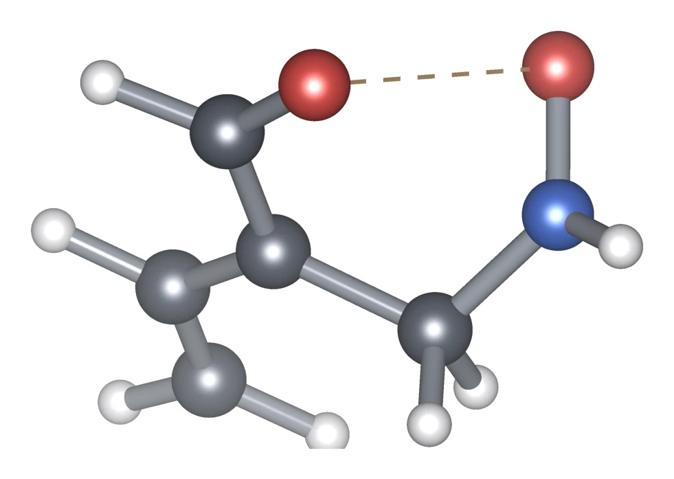
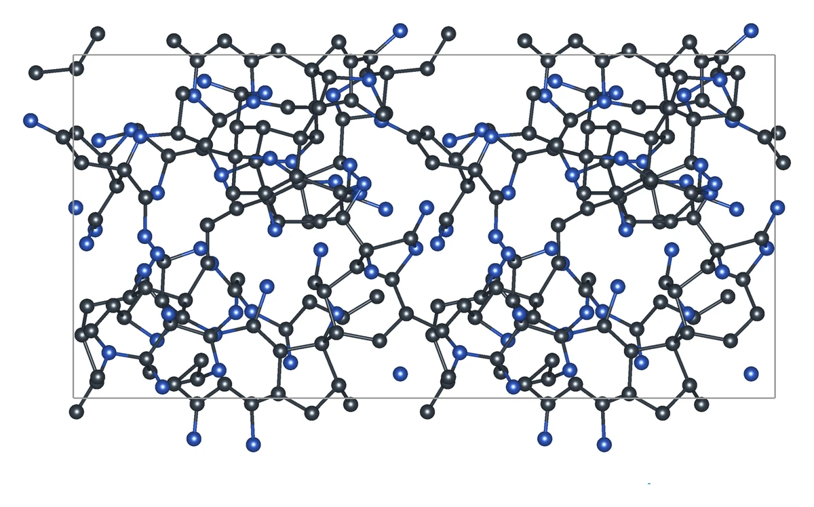
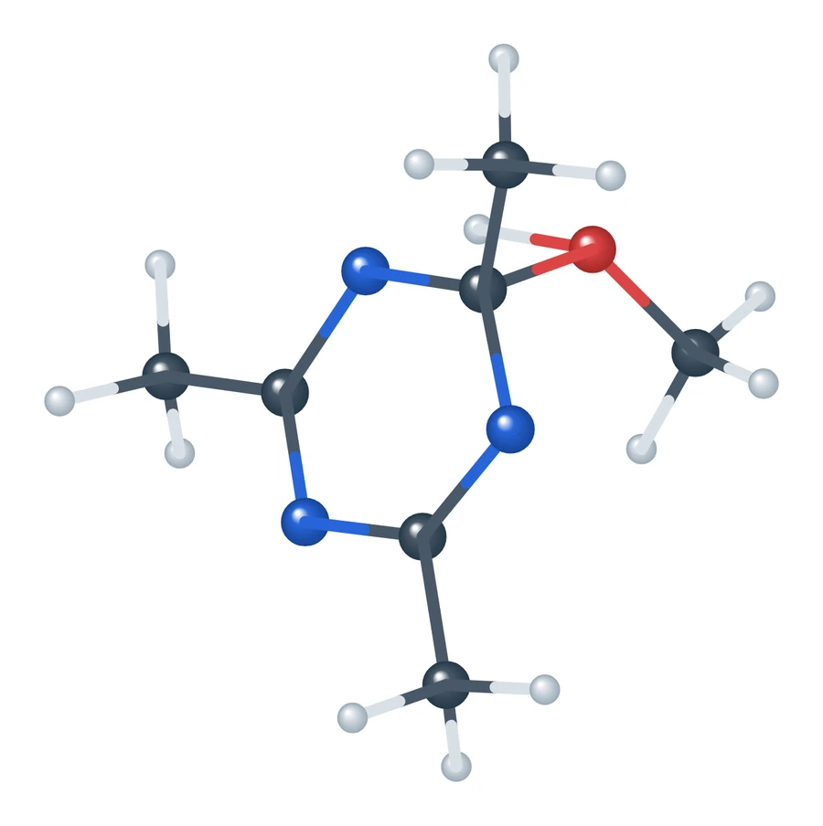

Oak Ridge National Laboratory · Center for Nanophase Materials Sciences
Reaction pathways of acetonitrile under pressure, in alcohols and on alkali metals
I am a research student intern at ORNL from May 2026 through July 2027. Our project asks how pressure, heat, plasma and the chemical environment reshape the transition states and reaction pathways of molecular systems. Acetonitrile is the first test system, because it forms chains, rings and polymers under very different conditions while remaining small enough to simulate in detail. We find its reaction steps in molecular dynamics with pretrained machine-learned interatomic potentials (MLIPs), check their barriers with density functional theory (DFT), and compare the predicted products with experiment.

The LDRD project
Decoding the Signatures and Pathways to a Transition State
This work is part of an ORNL Laboratory Directed Research and Development project led by Ilia N. Ivanov at the Center for Nanophase Materials Sciences, within the NEAT initiative on non-equilibrium and emergent transients in advanced and soft materials.
The project addresses a general question about chemical reactions. Transition-state theory describes the barrier that thermal energy must overcome, but pressure, plasma, ultrasound, light and mechanical force change the energy landscape in different ways and may open pathways that heating alone cannot reach. These transition states are short-lived and the reactions are often irreversible, so the mechanisms of such non-thermal transformations of small molecules remain poorly understood.
Acetonitrile (CH3CN) is the first test system. Under high pressure it converts at room temperature into oligomers, polymers and eventually carbon-rich solids, and it is small enough for detailed simulation. Acrylonitrile shares its nitrile group, so comparing the two separates the roles of double and triple bonds. The project combines high-pressure experiments, neutron and X-ray scattering, and Raman and infrared spectroscopy with molecular dynamics and DFT to identify the transition states along this sequence. It then asks whether milder stimuli can reach the same pathways, with the longer-term aim of selecting reaction pathways in other molecular systems and scaling up the synthesis of new materials.
- High-pressure experimentsPathways under pressure and temperature are mapped with Raman, infrared, neutron and X-ray probes.
- Reactive dynamicsMolecular dynamics samples the reaction networks and the rare events within them.
- Transition statesDFT locates and refines the transition states, including the effect of pressure.
- Alternative excitationMilder stimuli such as atmospheric plasma are tested for access to the same transition states.
The filled numbers mark the two simulation aims that this work addresses.
- Project lead
- Ilia N. Ivanov
- Project team
- Antonio Moreira dos Santos, Monojoy Goswami, Jingsong Huang, Jacek Jakowski
- My advisors
- Jingsong Huang, Ilia Ivanov, Soumendu Bagchi, Jacek Jakowski
Research
Research areas
Each study follows acetonitrile from the starting molecules to its products in a different environment. The benchmark tests the potentials on which the other studies rely.

MLIP benchmark
Fifteen pretrained checkpoints are compared with DFT energies, forces and barriers along 9,017 gas-phase reactions.
Benchmark →
High-pressure polymerization
Compressed crystalline acetonitrile polymerizes through hydrogen transfers and C–C additions, which we follow with a fine-tuned potential and DFT.
High pressure →
Alcohol reactions
An automated search with AutoMeKin connects acetonitrile in methanol, ethanol or isopropanol to the triazine and the aminopyrimidine.
Alcohol reactions →Alkali-metal surfaces
Connected routes on Li, Na and K(100) lead to methane, C–C chains, the triazine and 4-amino-2,6-dimethylpyrimidine.
Alkali metals →Isotope effects
Zero-point energies from Hessians give the kinetic isotope effect of each step on all three metals.
H/D isotope effects →
Methods and tools
ReactionFlow detects reactions in molecular dynamics, and DFT, kinetics and computed spectra connect the resulting paths to experiment.
Methods →Approach
How the reaction paths are obtained
- 1
Molecular dynamics
Pretrained or fine-tuned MLIPs run hot or compressed dynamics on time scales that DFT cannot reach.
- 2
Event detection
ReactionFlow identifies bond changes as they occur in the trajectory.
- 3
Path refinement
NEB, climbing-image NEB and saddle searches locate each transition state.
- 4
DFT checks
DFT single points along the MLIP paths give the barriers.
- 5
Comparison with experiment
Kinetics, isotope effects and spectra connect the predicted products to measurements.